7025A27 bonnet lid opening linkage - r r for right-hand drive versions
- Path
- Procedures > 70 FITTINGS > 7025 COMPARTMENT LIDS > 7025A bonnet lid > 7025A27 bonnet lid opening linkage - r r for right-hand drive versions
- Kind
- repair procedure (removal / refitting; the operation number is the code)
- Applies to
- engines: 1.6 TS , 1.8 TS; all production periods
- Interactive page
- https://sloeber94.github.io/elrnDB-a156/en/#/3238727
Applies to: engines: 1.6 TS , 1.8 TS; all production periods; only with equipment: Right hand drive
 Removing
Removing
 Refitting
Refitting7055A43 central front grille - r r .
7055A41 RIGHT FRONT GRILLE - R.R. (Left side).
7025A34 bonnet lid lock (one) - r+r or repair .
1. Undo the bolts (1a) and remove the anti-theft panel (1b) located under the crossmember.
2. Cut the band and release the bonnet release cable.
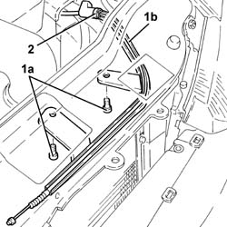
Applies to: engines: 1.6 TS , 1.8 TS; all production periods; only with equipment: Right hand drive
1. Loosen the band (1a) and open the cable duct (1b) on the side panel, acting on the retaining springs.
2. Release the bonnet release cable from the cable duct.
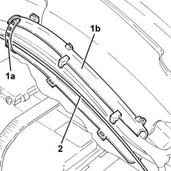
Applies to: engines: 1.6 TS , 1.8 TS; all production periods; only with equipment: Right hand drive
1. Remove the plastic buttons (1a) and remove the protection (1b).
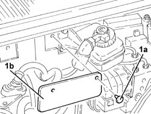
Applies to: engines: 1.6 TS , 1.8 TS; all production periods; only with equipment: Right hand drive
1008C10 power unit upper reaction link r r .
1008C16 body link bracket - r r .
1. Disconnect the rapid attachment coupling for the fuel vapour recovery pipe.
2. Release the fuel vapour recovery pipe from the band on the power steering fluid reservoir.
3. Release the coolant return pipe to the engine coolant reservoir from the fastenings on the fuel manifold.
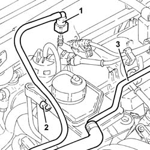
Applies to: engines: 1.6 TS , 1.8 TS; all production periods; only with equipment: Right hand drive
1. Undo the bolts fixing the power assisted steering fluid reservoir.
2. Disconnect the pipe from the power steering fulid reservoir cooling coil, reservoir side.
3. Disconnect the supply pipe from the power assisted steering fluid reservoir to the pump, reservoir side.
4. Remove the power assisted steering fluid reservoir.
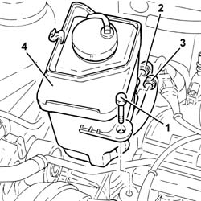
Applies to: engines: 1.6 TS , 1.8 TS; all production periods; only with equipment: Right hand drive
1. Disconnect the electrical connection from the variable geometry solenoid valve.
 | Name | Connector |
|---|---|---|
1 | Variable geometry control solenoid |
2. Disconnect the vacuum intake pipe.
3. Undo the bolts (3a), disconnect the linkage (3b) and remove the air flow switching actuator (3c).
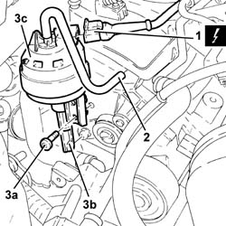
Applies to: engines: 1.6 TS , 1.8 TS; all production periods; only with equipment: Right hand drive
1. Remove the engine compartment bulkhead trim, as necessary.
2. Loosen the bands (2a) and release the bonnet release cable (2b).
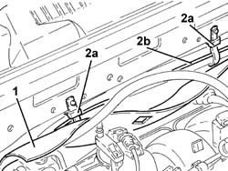
Applies to: engines: 1.6 TS , 1.8 TS; all production periods; only with equipment: Right hand drive
1. Undo the bolts (1a) and move the brake/clutch fluid reservoir (1b).
2. Undo the nut (2a) and move the fuse support (2b), complete with mounting bracket, away.
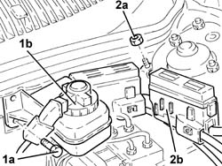
Applies to: engines: 1.6 TS , 1.8 TS; all production periods; only with equipment: Right hand drive
1. Remove the plastic button (1a) and move the trim (1b), as necessary.
2. Release the bonnet release cable (2a) from the securing band (2b).
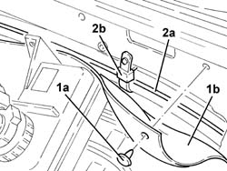
Applies to: engines: 1.6 TS , 1.8 TS; all production periods; only with equipment: Right hand drive
Using a suitable sensor for refitting, remove the bonnet release cable from the area of the ABS hydraulic control unit.
1. Release the bonnet release cable from the retaining band.
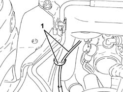
Applies to: engines: 1.6 TS , 1.8 TS; all production periods; only with equipment: Right hand drive
1. Undo the bolts (1a) and move the bonnet release cable (1b), as necessary.
2. Disconnect the bonnet release cable from the lever.
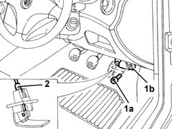
Applies to: engines: 1.6 TS , 1.8 TS; all production periods; only with equipment: Right hand drive
Connect a suitable sensor for refitting to the bonnet release cable.
Remove the bonnet release cable from the engine compartment.
Applies to: engines: 1.6 TS , 1.8 TS; all production periods; only with equipment: Right hand drive
Refitting
RemovingPlace the bonnet release cable back in its housing in the engine compartment with the sensor.
Connect the bonnet release cable to the appropriate lever.
Place the bonnet release lever back in its housing and secure it usign the bolts.
Fasten the bonnet release cable using the appropriate bands.
Place the trim back in its housing and secure it using the plastic button.
Place the fuse support, complete with mounting bracket, back in its housing and secure it using the nut.
Replace the clutch fluid reservoir and bolt in place.
Place the engine bulkhead cover back in its housing.
Place the air flow switching control actuator back in its housing, connect the linkage and secure it using the bolts.
Connect the vacuum intake pipe.
Connect the electrical connection to the variable geometry solenoid valve.
Place the power assisted steering fluid reservoir back in its housing.
Connect the supply pipe from the fluid reservoir to the power assisted steering pump, reservoir side.
Connect the pipe from the cooling coil to the power assisted steering fluid reservoir, reservoir side.
Tighten the power steering fluid reservoir bolts.
Fix the coolant return pipe to the engine coolant reservoir with the fastenings on the fuel manifold.
Secure the fuel vapour recovery pipe using the band to the power assisted steering fluid reservoir.
Connect the rapid attachment for the fuel vapour recovery pipe.
1008C16 body link bracket - r r .
1008C10 power unit upper reaction link r r .
Place the protection back in its housing and secure it using the plastic pins.
Close the cable duct on the side panel and tighten the band.
Place the anti-theft panel back in its housing located under the crossmember.
7025A34 bonnet lid lock (one) - r+r or repair .
7055A41 RIGHT FRONT GRILLE - R.R. (Left side).